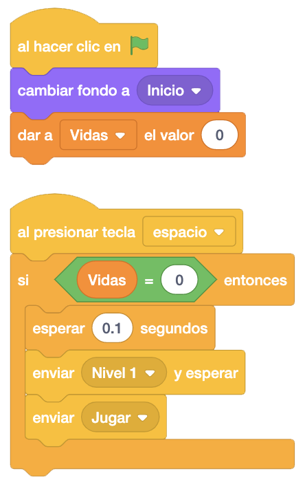
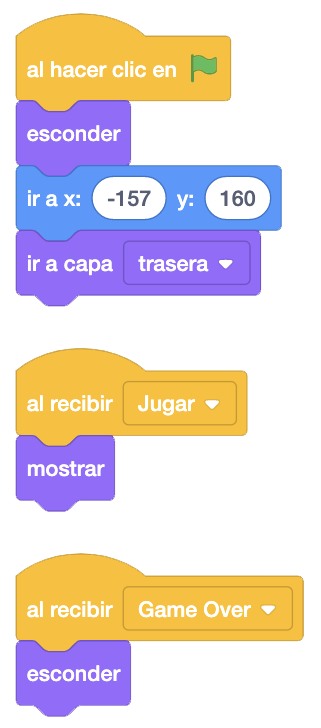

Vamos a colocar una pantalla inicial al juego. Empezaremos por cambiar lo que tenemos al pulsar la bandera por
cuando pulsemos la tecla "S".
Al hacer clic en la bandera lo único que pondremos es que ponga el fondo "Inicio" y pondremos de momento las
vidas a "0".
En el bloque "Al Presionar La Tecla S" pondremos que si la variable "Vidas" es "0", que envíe los mensajes
"Nivel 1" y "Jugar".

Ahora iremos a Mario donde añadiremos un bloque "Al hacer Clic En La Bandera" donde ocultaremos a Mario.
En el objeto donde pone la palabra "MARIO", para poner las monedas, crearemos un mensaje "Jugar" donde
mostraremos el literal, quitándolo de cuando presionemos la bandera.
También tendríamos que ponerlo en los objetos vidas de Mario y el primer y segundo dígito de los puntos.

El juego iría quedando así.
Podemos ver el juego terminado con la pantalla de inicio pulsando aquí.